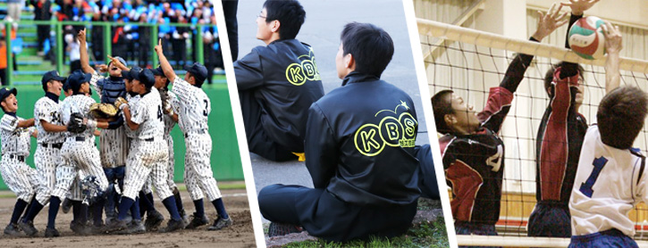
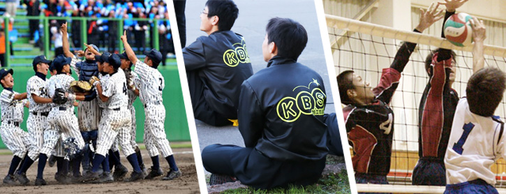

部活動一覧
運動部
ソフトテニス部/野球部/サッカー部/バレーボール部/陸上部/ラグビー部/山岳部/バスケットボール部/卓球部/バドミントン部/柔道部/剣道部/ボクシング部
文化部
演劇部/美術部/写真部/情報処理部/茶道部/吹奏楽部/書道部
局
新聞局/放送局/図書局
同好会
ボランティア同好会
ソフトテニス部/野球部/サッカー部/バレーボール部/陸上部/ラグビー部/山岳部/バスケットボール部/卓球部/バドミントン部/柔道部/剣道部/ボクシング部
演劇部/美術部/写真部/情報処理部/茶道部/吹奏楽部/書道部
新聞局/放送局/図書局
ボランティア同好会
